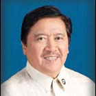

| History |
| Legislators |
| Laws |
| About |
 |
| LEGISLATORS |
| LEGISLATIVE BODY (YEAR) | INCLUSIVE YEARS |
LEGISLATIVE DISTRICT/PROVINCE | LEGISLATOR | ||
| 1 | 1st Philippine Legislature | 1907 - 1909 | 1st District Ilocos Sur | SINGSON ENCARNACION, Vicente |  |
| 2 | 1st Philippine Legislature | 1907 - 1909 | 2nd District Ilocos Sur | MINA, Maximino |  |
| 3 | 1st Philippine Legislature | 1907 - 1909 | 3rd District Ilocos Sur | VILLAMOR, Juan |  |
| 4 | 2nd Philippine Legislature | 1910 - 1912 | 1st District Ilocos Sur | SINGSON ENCARNACION, Vicente | |
| 5 | 2nd Philippine Legislature | 1910 - 1912 | 2nd District Ilocos Sur | DE VALLE, Jose Ma. |  |
| 6 | 2nd Philippine Legislature | 1910 - 1912 | 3rd District Ilocos Sur | VILLAMOR, Juan | |
| 7 | 3rd Philippine Legislature | 1912 - 1913 | 1st District Ilocos Sur | SINGSON ENCARNACION, Vicente | |
| 8 | 3rd Philippine Legislature | 1913 - 1916 | 1st District Ilocos Sur | REYES, Alberto |  |
| 9 | 3rd Philippine Legislature | 1912 - 1916 | 2nd District Ilocos Sur | TALAVERA, Gregorio | |
| 10 | 3rd Philippine Legislature | 1912 - 1916 | 3rd District Ilocos Sur | BORBON, Julio |  |
| 11 | 4th Philippine Legislature | 1916 - 1919 | 1st District Ilocos Sur | REYES, Alberto | |
| 12 | 4th Philippine Legislature | 1916 - 1919 | 2nd District Ilocos Sur | MORALES, Ponciano |  |
| 13 | 4th Philippine Legislature | 1916 - 1919 | 3rd District Ilocos Sur | PURUGGANAN, Eustaquio |  |
| 14 | 5th Philippine Legislature | 1919 - 1922 | 1st District Ilocos Sur | QUIRINO, Elpidio |  |
| 15 | 5th Philippine Legislature | 1919 - 1922 | 2nd District Ilocos Sur | MORALES, Ponciano | |
| 16 | 6th Philippine Legislature | 1922 - 1925 | 1st District Ilocos Sur | SINGSON PABLO, Vicente |  |
| 17 | 6th Philippine Legislature | 1922 - 1925 | 2nd District Ilocos Sur | BITENG, Lupo | |
| 18 | 7th Philippine Legislature | 1925 - 1927 | 1st District Ilocos Sur | RAMOS, Simeon | |
| 19 | 7th Philippine Legislature | 1925 - 1927 | 2nd District Ilocos Sur | BITENG, Lupo | |
| 20 | 8th Philippine Legislature | 1928 - 1930 | 1st District Ilocos Sur | SOLIVEN, Benito T. |  |
| 21 | 8th Philippine Legislature | 1928 - 1930 | 2nd District Ilocos Sur | VILLANUEVA, Fidel B. |  |
| 22 | 9th Philippine Legislature | 1931 - 1934 | 1st District Ilocos Sur | SINGSON REYES, Pedro |  |
| 23 | 9th Philippine Legislature | 1931 - 1934 | 2nd District Ilocos Sur | VILLANUEVA, Fidel B. | |
| 24 | 10th Philippine Legislature | 1934 - 1935 | 1st District Ilocos Sur | SINGSON REYES, Pedro | |
| 25 | 10th Philippine Legislature | 1934 - 1935 | 2nd District Ilocos Sur | SANIDAD, Prospero C. |  |
| 26 | 1st National Assembly (Commonwealth) | 1935 - 1938 | 1st District Ilocos Sur | SOLIVEN, Benito T. | |
| 27 | 1st National Assembly (Commonwealth) | 1935 - 1938 | 2nd District Ilocos Sur | BRILLANTES, Sixto |  |
| 28 | 2nd National Assembly (Commonwealth) | 1939 - 1941 | 1st District Ilocos Sur | SOLIVEN, Benito T. | |
| 29 | 2nd National Assembly (Commonwealth) | 1939 - 1941 | 2nd District Ilocos Sur | SANIDAD, Prospero C. | |
| 30 | National Assembly (Japanese Regime) | 1943 - 1944 | Ilocos Sur | QUIROLGICO, Alejandro | |
| 31 | National Assembly (Japanese Regime) | 1943 - 1944 | Ilocos Sur | VILLANUEVA, Fidel B. | |
| 32 | 1st Congress of the Commonwealth (Liberation Period) | 1945 - 1945 | 1st District Ilocos Sur | SERRANO, Jesus O. | |
| 33 | 1st Congress of the Commonwealth (Liberation Period) | 1945 - 1945 | 2nd District Ilocos Sur | SANIDAD, Prospero C. | |
| 34 | 2nd Congress of the Commonwealth | 1946 - 1946 | 1st District Ilocos Sur | CRISOLOGO, Floro S. | |
| 35 | 2nd Congress of the Commonwealth | 1946 - 1946 | 2nd District Ilocos Sur | VILLANUEVA, Fidel B. | |
| 36 | 1st Congress of the Republic | 1946 - 1949 | 1st District Ilocos Sur | CRISOLOGO, Floro S. | |
| 37 | 1st Congress of the Republic | 1946 - 1949 | 2nd District Ilocos Sur | VILLANUEVA, Fidel B. | |
| 38 | 2nd Congress of the Republic | 1950 - 1953 | 1st District Ilocos Sur | CRISOLOGO, Floro S. | |
| 39 | 2nd Congress of the Republic | 1950 - 1953 | 2nd District Ilocos Sur | GACULA, Ricardo R. |  |
| 40 | 3rd Congress of the Republic | 1954 - 1957 | 1st District Ilocos Sur | CRISOLOGO, Floro S. | |
| 41 | 3rd Congress of the Republic | 1954 - 1957 | 2nd District Ilocos Sur | GACULA, Ricardo R. | |
| 42 | 4th Congress of the Republic | 1958 - 1959 | 2nd District Ilocos Sur | REYES, Godofredo S. |  |
| 43 | 4th Congress of the Republic | 1958 - 1961 | 1st District Ilocos Sur | TOBIA, Faustino B. |  |
| 44 | 5th Congress of the Republic | 1962 - 1965 | 1st District Ilocos Sur | CRISOLOGO, Floro S. | |
| 45 | 5th Congress of the Republic | 1962 - 1965 | 2nd District Ilocos Sur | SANIDAD, Pablo C. |  |
| 46 | 6th Congress of the Republic | 1966 - 1969 | 1st District Ilocos Sur | CRISOLOGO, Floro S. | |
| 47 | 6th Congress of the Republic | 1969 - 1969 | 2nd District Ilocos Sur | SANIDAD, Pablo C. | |
| 48 | 7th Congress of the Republic | 1970 - 1970 | 1st District Ilocos Sur | CRISOLOGO, Floro S. | |
| 49 | 7th Congress of the Republic | 1970 - 1972 | 2nd District Ilocos Sur | CAUTON, Lucas V. |  |
| 50 | Regular Batasang Pambansa | 1984 - 1986 | Ilocos Sur, Region I | BATERINA, Salacnib F. |  |
| 51 | Regular Batasang Pambansa | 1984 - 1986 | Ilocos Sur, Region I | SINGSON, Eric D. |  |
| 52 | 8th Congress of the Republic | 1987 - 1992 | 1st District Ilocos Sur | SINGSON, Luis C. |  |
| 53 | 8th Congress of the Republic | 1987 - 1992 | 2nd District Ilocos Sur | SINGSON, Eric D. | |
| 54 | 9th Congress of the Republic | 1992 - 1995 | 1st District Ilocos Sur | TAJON, Mariano M. |  |
| 55 | 9th Congress of the Republic | 1992 - 1995 | 2nd District Ilocos Sur | SINGSON, Eric D. | |
| 56 | 10th Congress of the Republic | 1995 - 1998 | 1st District Ilocos Sur | TAJON, Mariano M. | |
| 57 | 10th Congress of the Republic | 1995 - 1998 | 2nd District Ilocos Sur | SINGSON, Eric D. | |
| 58 | 11th Congress of the Republic | 1998 - 2001 | 1st District Ilocos Sur | BATERINA, Salacnib F. | |
| 59 | 11th Congress of the Republic | 1998 - 2001 | 2nd District Ilocos Sur | SINGSON, Grace G. |  |
| 60 | 12th Congress of the Republic | 2001 - 2004 | 1st District Ilocos Sur | BATERINA, Salacnib F. | |
| 61 | 12th Congress of the Republic | 2001 - 2004 | 2nd District Ilocos Sur | SINGSON, Eric D. | |
| 62 | 13th Congress of the Republic | 2004 - 2007 | 1st District Ilocos Sur | BATERINA, Salacnib F. | |
| 63 | 13th Congress of the Republic | 2004 - 2007 | 2nd District Ilocos Sur | SINGSON, Eric D. | |
| 64 | 14th Congress of the Republic | 2007 - 2010 | 1st District Ilocos Sur | SINGSON, Ronald V. |  |
| 65 | 14th Congress of the Republic | 2007 - 2010 | 2nd District Ilocos Sur | SINGSON, Eric D. | |
| 66 | 15th Congress of the Republic | 2010 - 2011 | 1st District Ilocos Sur | SINGSON, Ronald V. | |
| 67 | 15th Congress of the Republic | 2011 - 2013 | 1st District Ilocos Sur | SINGSON, Ryan Luis V. |
 |
| 68 | 15th Congress of the Republic | 2010 - 2013 | 2nd District Ilocos Sur | SINGSON, Eric Jr. G. |
 |
| 69 | 16th Congress of the Republic | 2013 – 2016 | Ilocos Sur, 1st District | Singson, Ronald V. | |
| 70 | 16th Congress of the Republic | 2013 – 2016 | Ilocos Sur, 2nd District | Singson, Eric D. |  |

Congressional Library Bureau
Legislative Library Service